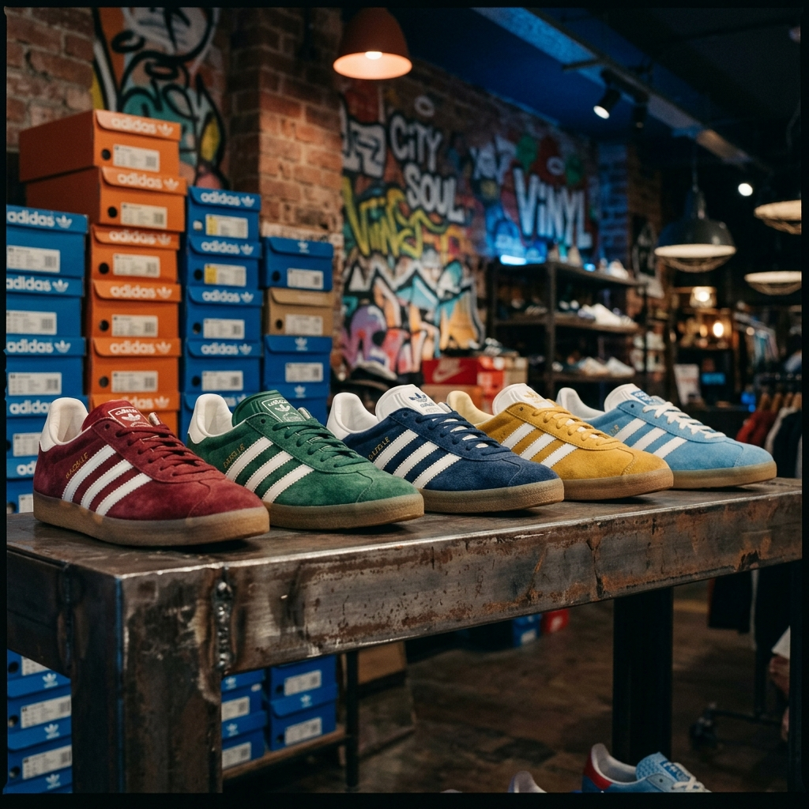
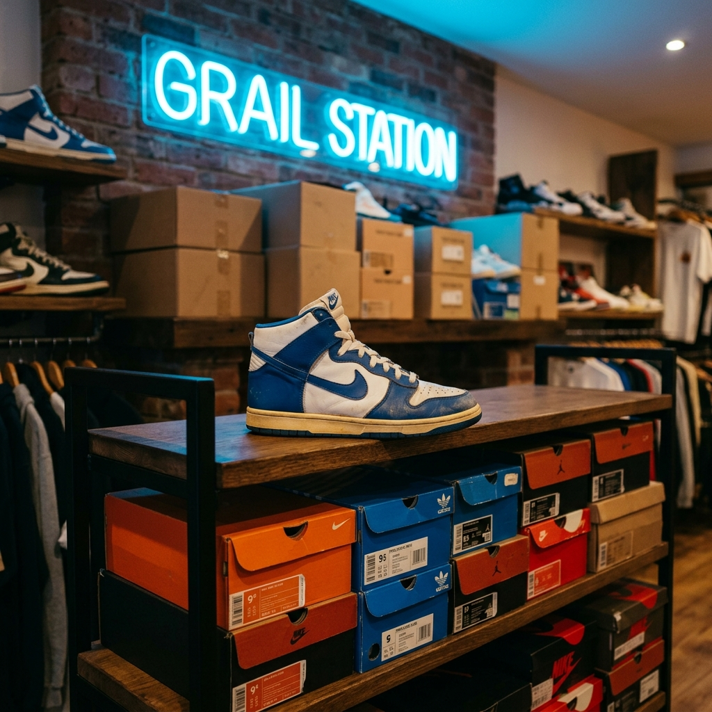
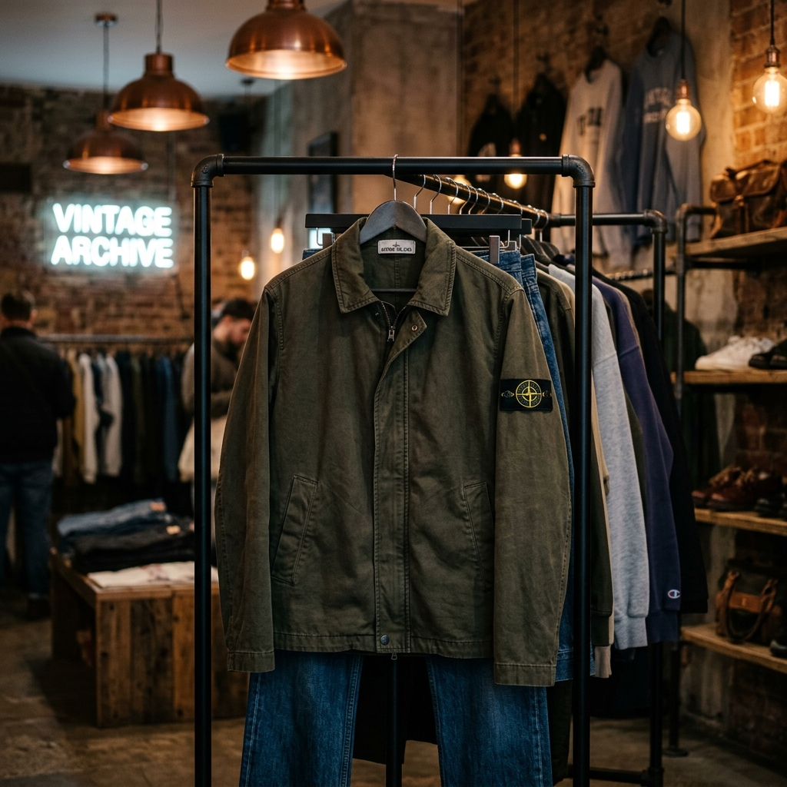
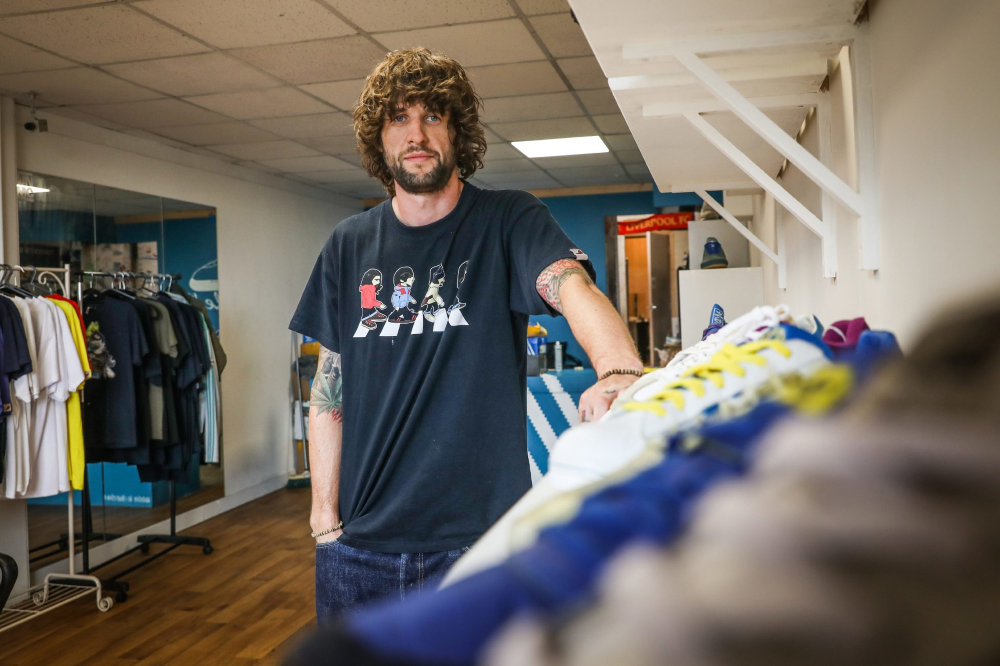

THE PREMIER STREETWEAR VAULT & SNEAKER CLINIC
Rare deadstock, classic Adidas terraces, and exclusive streetwear collectibles. Handpicked, pristine, and historically significant.

1982
1996
VINTAGEWe don't just clean sneakers—we restore legacies. Our custom clinical laboratory uses pH-balanced cleaning formulas and ultrasonic state-of-the-art tools to revive any sole.
Removing deeply embedded particles without compromising premium suedes, nylons, and leathers.
Custom pigments matched to original vintage trainer release specifications for fading midsoles and uppers.
Applying hydrophobic, oleophobic coatings to withstand wet and cold Scottish elements.
Rooted in Acid House beats, football casual culture, and the Britpop style of Dundee. The black sheep, standing out with vintage pride.
The rebellious syncopation of the 90s, high-vis neon styling, and warehouse dance energy. We carry that independence in our custom trainer customisations and graphics.
Pre-match pints, Adidas Gazelles, Stone Island jackets, and vintage football shirts. Dundee United's tangerine and Dundee FC's dark blue merged in street authenticity.

From Barbershop Repairs to Global Recognition
Kris Boyle’s journey is a narrative of absolute resilience. Starting out by restoring premium casual footwear in the corner of a local Dundee barbershop in 2018, Kris combined a deep passion for vintage streetwear, terrace fashion, and expert shoe restoration to establish Dundee Sole. Today, it stands as a cultural monument in the heart of Wellgate Centre.
Earning the nickname Dundee’s "Shoe Doctor," Kris has revived deadstock Adidas trainers for collectors worldwide, built custom boots for Dundee FC legend Fabian Caballero, and even caught the eye of legendary Wu-Tang Clan member Raekwon the Chef via Instagram for his custom sneaker craftsmanship.
But his work goes far beyond sneaker restoration. Kris is a dedicated community stalwart, vocal anti-knife crime campaigner, and mentor. By speaking out against negative online culture and aiming to launch a digital media academy, Kris is actively dedicating his platform to guide and inspire Dundee’s next generation of builders.